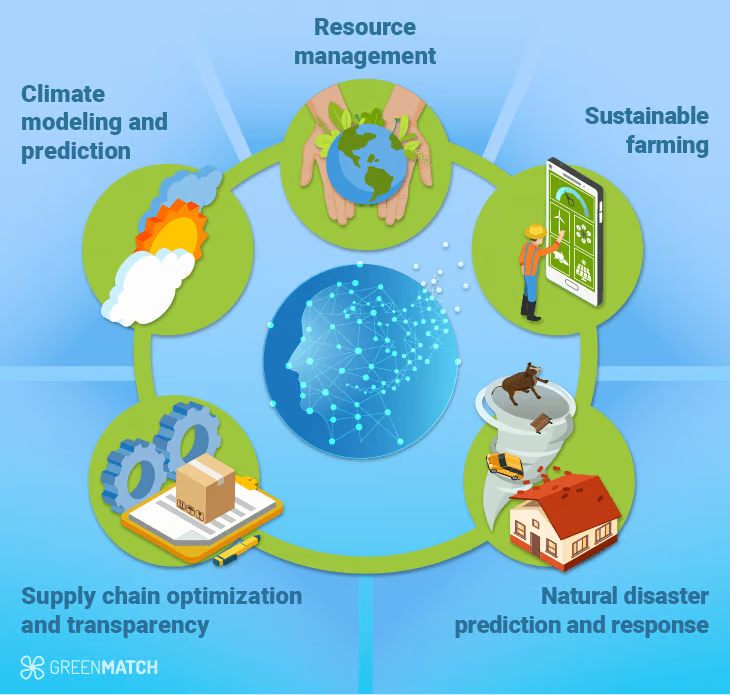

I am a postdoctoral associate at Cornell University, under the supervision of Prof. Fengqi You.
Before that, I was a postdoctoral research associate at the University of Illinois Urbana-Champaign (UIUC), working with Prof. Shaowen Wang and Prof. Jiawei Han.
In August 2025, I received my PhD in Computer Science from Florida International University (FIU), advised by Prof. Giri Narasimhan.
I was also a Momentum Research Fellow at Columbia University.
With the goal of AI for environmental sustainability, my research focuses on LLM, Agent and AI for Envionemental and Climate Science. I've been pursuing my research goals from:

Image credit: GreenMatch
Sincere gratitude to funding sources: NSF I-GUIDE led by UIUC, NSF LEAP led by Columbia University.
[Job Hunting] I am on the job market for AI research positions in both academia and industry. If you believe I might be a good fit, please feel free to reach out at js4244@cornell.edu.
(* denotes equal contribution, # represents corresponding author, † indicates student(s) supervised by me)
-
MultiCube-RAG for Multi-hop Question Answering
Jimeng Shi, Wei Hu, Runchu Tian, Bowen Jin, Wonbin Kweon, SeongKu Kang, Yunfan Kang, Dingqi Ye, Sizhe Zhou, Shaowen Wang, Jiawei Han
(Under review)
-
Hypercube-RAG: Hypercube Retrieval-Augmented Generation for Scientific Question-Answering
Jimeng Shi, Sizhe Zhou, Bowen Jin, Wei Hu, Runchu Tian, Shaowen Wang, Giri Narasimhan, Jiawei Han
(Under review)
-
Retrieval is Cheap, Show Me the Code: Executable Multi-Hop Reasoning for Retrieval-Augmented Generation
Jiashuo Sun*, Jimeng Shi*, Yixuan Xie, Saizhuo Wang, Jash Pajesh Parekh, Pengcheng Jiang, Zhiyi Shi, Jiajun Fan, Qinglong Zheng, Peiran Li, Shaowen Wang, Ge Liu, Jiawei Han
(Under review)
-
Deep Learning and Foundation Models for Weather Prediction: A Survey
Jimeng Shi, Azam Shirali, Bowen Jin, Sizhe Zhou, Wei Hu, Rahuul Rangaraj, Zhaonan Wang, Yanzhao Wu, Leonardo Bobadilla, Upmanu Lall, Shaowen Wang, Jiawei Han, Giri Narasimhan
The 35th International Joint Conference on Artificial Intelligence (IJCAI 2026)
-
Retrieval-Augmented Foundation Models for Water Level Prediction in the Everglades
Rahuul Rangaraj*,†, Jimeng Shi*,#, Rajendra Paudel, Giri Narasimhan#, Yanzhao Wu#
The 32nd SIGKDD Conference on Knowledge Discovery and Data Mining (KDD 2026)
-
FIDLAR: Forecast-Informed Deep Learning Approaches for Flood Mitigation
Jimeng Shi, Zeda Yin, Arturo Leon, Jayantha Obeysekera, Giri Narasimhan
The 39th Annual AAAI Conference on Artificial Intelligence (AAAI 2025) (Oral)
Presented at the Florida House Natural Resources & Disasters Subcommittee
-
CoDiCast: Conditional Diffusion Model for Weather Prediction with Uncertainty Quantification
Jimeng Shi, Bowen Jin, Jiawei Han, Sundararaman Gopalakrishnan, Giri Narasimhan
The 34th International Joint Conference on Artificial Intelligence (IJCAI 2025) (Oral)
Presented at the National Oceanic and Atmospheric Administration (NOAA)
-
Deep Learning Models for Water Level Prediction in South Florida
Jimeng Shi, Zeda Yin, Rukmangadh Myana, Arturo Leon, Jayantha Obeysekera, Giri Narasimhan
Journal of Water Resources Planning and Management, 151(10)
-
ReFine: Boosting Time Series Prediction Under Extreme Events by Reweighting and Fine-tuning
Jimeng Shi, Azam Shirali, Giri Narasimhan
2024 IEEE International Conference on Big Data (IEEE BigData 2024) (Oral)
-
The Power of Explainability in Forecast-Informed Deep Learning Models for Flood Mitigation
Jimeng Shi, Vitalii Stebliankin, Giri Narasimhan
NeurIPS 2023 workshop on Climate Change AI
-
Graph Transformer Network for Flood Forecasting with Heterogeneous Covariates
Jimeng Shi, Vitalii Stebliankin, Zhaonan Wang, Shaowen Wang, Giri Narasimhan
NSF I-GUIDE Forum in New York, 2023 (Oral)
-
TimeX++: Learning Time-Series Explanations with Information Bottleneck
Zichuan Liu, Tianchun Wang, Jimeng Shi, Xu Zheng, Zhuomin Chen, Lei Song, Wenqian Dong, Jayantha Obeysekera, Farhad Shirani, Dongsheng Luo
The 41st International Conference on Machine Learning (ICML 2024)
-
Evaluating protein binding interfaces with transformer networks
Vitalii Stebliankin, Azam Shirali, Prabin Baral, Jimeng Shi, Prem Chapagain, Kalai Mathee, Giri Narasimhan
Nature Machine Intelligence, 5(9) (IF=25.89)
- Senior Chair of NSF I-GUIDE 2026
- Lead of NSF I-GUIDE Climber Group, 2025.08 - 2026.08
- Journal Reviewer
-
Nature Communications, 2026
-
npj Climate and Atmospheric Science, 2026
-
Transactions on Knowledge Discovery from Data (TKDD), 2026
-
Water Security, 2026
- Conference Reviewer
-
ICLR (2025-2026), NeurIPS 2026, AAAI (2026, 2027), IJCAI (2025-2026), KDD (2024, 2026-2027), WWW 2026, CIKM 2026, ECML (2023-2025), ECAI 2025
- Volunteer
-
Technical lead on organizing the International Collegiate Programming Contest (ICPC) Southeast USA Regional Contest at Florida International University (2022, 2023, 2024)
-
Helped to organize the High School Programming Contest at Florida International University (2025)